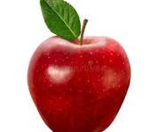
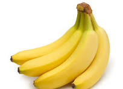

About Us
At Fresh Fruit Stand, we are passionate about providing our community with the freshest and healthiest fruits directly from local farms. Our stand offers a wide variety of seasonal fruits, from juicy strawberries to crisp apples, and everything in between. We believe in supporting local agriculture while offering top-quality produce to our customers.
Our goal is simple: to make healthy eating easy and accessible. We hand-pick every fruit and ensure it’s ripe, sweet, and ready to eat. Whether you're shopping for your daily snacks or preparing for a family gathering, we have the perfect fruits for any occasion.



Come visit us today and taste the difference of fresh, local fruit!